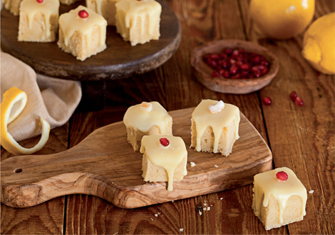

Lemon Cakes

"Later came sweetbreads and pigeon pie and baked apples with cinnamon and lemon cakes frosted in sugar, but by then Sansa was so stuffed that she could not manage more than two little lemon cakes, as much as she loved them."
—A GAME OF THRONES
Ingredients:
- 2 and a 1/2 Cups Flour
- 2 Cups Granulated Sugar
- 6 Tablespoons Unsalted Butter
- Grated Zest from 2 Lemons
- 1 Egg
- 2 Egg Yolks
- 1/2 Cup Confectioners' Sugar
- 1 and 1/2 Teaspoons Milk
Steps:
- Pre-heat the oven to 350° F.
- In a large bowl, combine the flour and granulated sugar.
- Cut in the butter, then add the zest and the whole egg and yolks.
- Mix thoroughly, adding more flour as needed, until the dough is no longer sticky and can be easily shaped by hand.
- Roll the dough into balls about one inch across and place them on a baking sheet at least two inches apart, giving them room to spread as they bake.
- Bake for 15 minutes, until the tops are slightly golden.
- Allow them to cool for a minute before moving them onto a cooling rack.
- Mix the confectioners' sugar and milk to a smooth consistency.
- Use a spoon to drizzle the icing over the cookies.
Go to Home Page